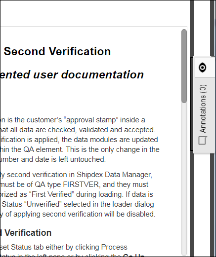
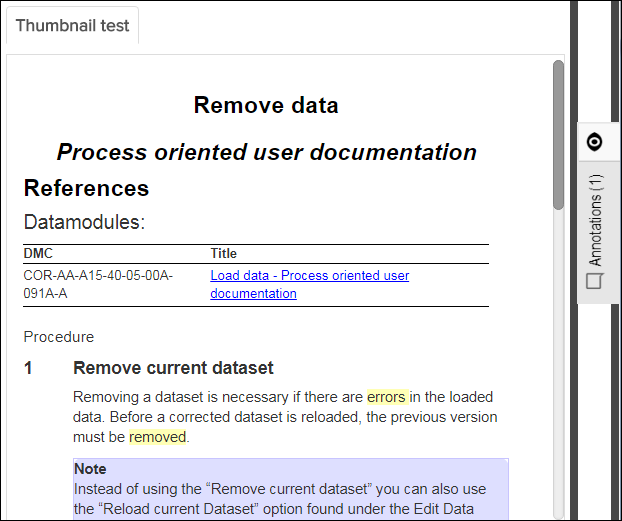
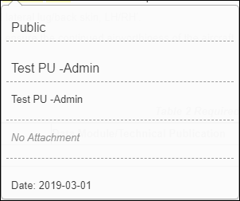
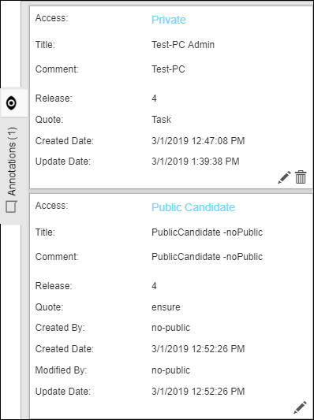

- Private: can only be viewed by the user who created it.
- Public: can be viewed by everyone.
If the Annotation feature is switched on you will notice a "View Annotations" box in the right margin of the application window.

The "0", as in the screenshot above indicates that there are no annotations attached to this document.
If annotations have been made to a document, the number of annotations is displayed in the box and the annotated area is highlighted in yellow:

If you have permissions to create/edit/delete annotations and there are
public candidate annotations to be reviewed, the  public candidates icon appears in the Annotations /
Supplemental Contents header. The number in the lower-right of the
public candidates icon appears in the Annotations /
Supplemental Contents header. The number in the lower-right of the  public candidates icon indicates how many public candidates are
within the
document.
public candidates icon indicates how many public candidates are
within the
document.
To view the annotations you can either mouse over the annotated text and view the comment in a pop-up dialog, or you can click inside the gray area to expand the area:
Pop-up dialog example:

- Private, Public, or Public Candidate (Access level)
- Title
- Comment (the annotation)
- Attachment (shows "No Attachment" if there is none)
- Date (the last updated date)
View Annotations box example:

- Private, Public, or Public Candidate (Access level)
- Title
- Comment (the annotation)
- Release (the revision number of the publication)
- Quote (the annotated text)
- Create Date (automatically updated)
- Update Date (automatically updated)
- Edit annotation (requires permissions if the annotation is public.)
 Delete annotation (requires permissions if the annotation is
public.)
Delete annotation (requires permissions if the annotation is
public.) Open annotated graphic (a document may have several graphics, so to
open the correct graphic you can use this button.)
Open annotated graphic (a document may have several graphics, so to
open the correct graphic you can use this button.)
To minimize the annotation area, click once more inside the gray annotation box.
Annotations can be exported and imported in Pinpoint. This functionality is specifically intended for the standalone version of Pinpoint when you want to migrate annotations from one standalone Pinpoint application to another. For instructions, refer to Export and Import Annotations.